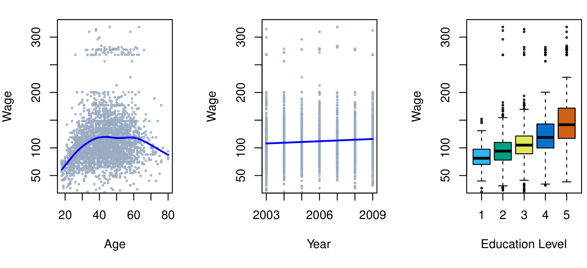
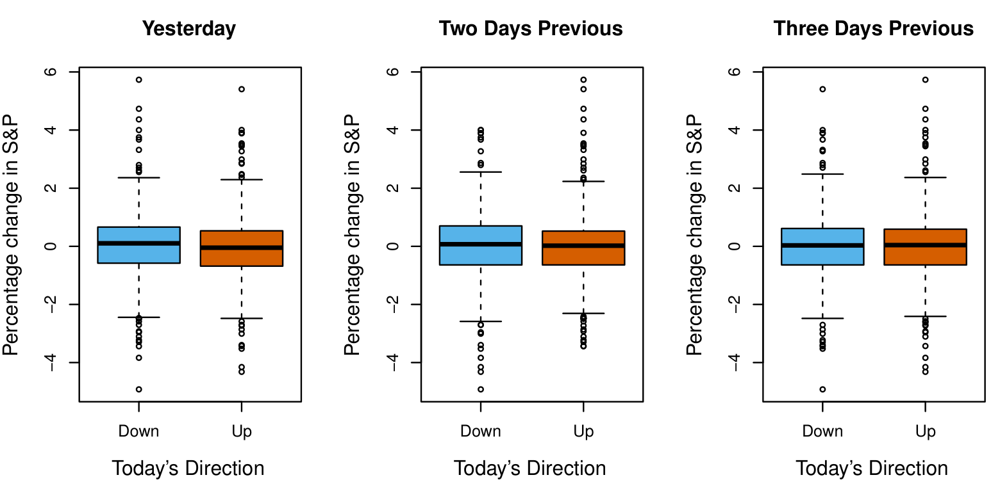
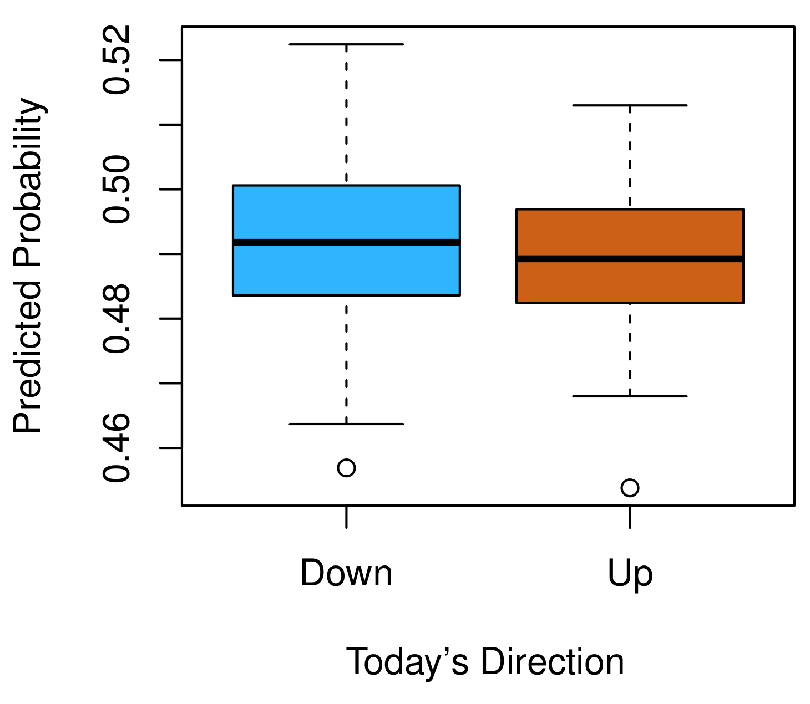
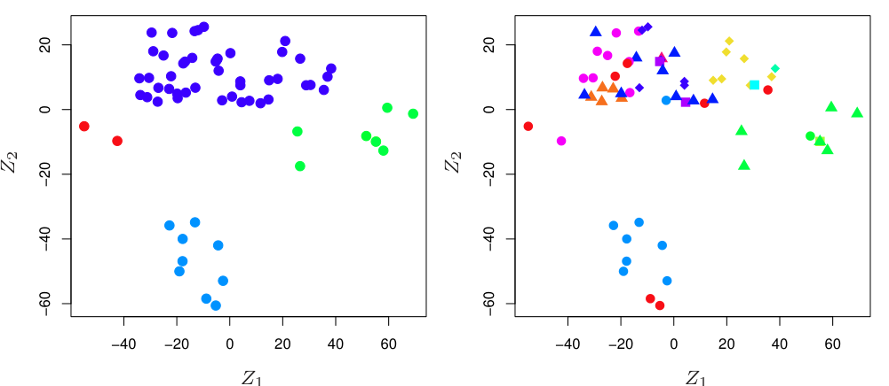

1. Introducción
1.1 Una Visión General del Aprendizaje Estadístico
El aprendizaje estadístico se refiere a un vasto conjunto de herramientas para la comprensión de datos. Estas herramientas pueden clasificarse como supervisadas o no supervisadas. En términos generales, el aprendizaje estadístico supervisado consiste en construir un modelo estadístico para predecir, o estimar, una variable de salida (output) a partir de una o más variables de entrada (inputs). Problemas de esta naturaleza surgen en campos tan diversos como los negocios, la medicina, la astrofísica y las políticas públicas. En el aprendizaje estadístico no supervisado, existen variables de entrada pero no hay una variable de salida que supervise; no obstante, podemos aprender relaciones y estructura a partir de dichos datos. Para ilustrar algunas aplicaciones del aprendizaje estadístico, a continuación describimos brevemente tres conjuntos de datos reales que se analizan en este libro.
1.1.1 Datos Salariales (Wage)
En esta aplicación (a la que nos referimos como el conjunto de datos Wage a lo largo de este libro), examinamos una serie de factores que se relacionan con los salarios de un grupo de hombres de la región atlántica de Estados Unidos. En concreto, deseamos comprender la asociación entre la age (edad) y el nivel de education (educación) de un empleado, así como el year (año) natural, y su wage (salario). Consideremos, por ejemplo, el panel izquierdo de la Figura 1.1, que muestra el wage frente a la age para cada uno de los individuos del conjunto de datos. Existe evidencia de que el wage aumenta con la age, pero luego vuelve a disminuir después de aproximadamente los 60 años. La línea azul, que proporciona una estimación del wage promedio para una age dada, hace más clara esta tendencia. Dada la age de un empleado, podemos usar esta curva para predecir su wage. Sin embargo, también queda claro a partir de la Figura 1.1 que existe una cantidad significativa de variabilidad asociada a este valor promedio, por lo que es poco probable que la age por sí sola proporcione una predicción precisa del wage de un hombre en particular.

Figura 1.1: Datos Wage, que contienen información de encuestas de ingresos para hombres de la región atlántica central de Estados Unidos. Izquierda: salario en función de la edad. En promedio, el salario aumenta con la edad hasta aproximadamente los 60 años, momento en el cual comienza a disminuir. Centro: salario en función del año. Hay un aumento lento pero constante de aproximadamente \(10{,}000\) en el salario promedio entre 2003 y 2009. Derecha: diagramas de caja que muestran el salario en función del nivel educativo, donde \(1\) indica el nivel más bajo (sin diploma de secundaria) y \(5\) el nivel más alto (doctorado). En promedio, el salario aumenta con el nivel educativo.
También disponemos de información sobre el nivel de education de cada empleado y el year en que se percibió el wage. Los paneles central y derecho de la Figura 1.1, que muestran el wage en función tanto del year como del nivel de education, indican que ambos factores están asociados con el wage. Los salarios aumentan aproximadamente \(10{,}000\), de manera aproximadamente lineal (o en línea recta), entre 2003 y 2009, aunque este incremento es muy leve en relación con la variabilidad de los datos. Los salarios también suelen ser mayores para individuos con niveles de education más altos: los hombres con el nivel de education más bajo (1) tienden a tener salarios sustancialmente menores que aquellos con el nivel de education más alto (5). Claramente, la predicción más precisa del wage de un hombre dado se obtendrá combinando su age, su nivel de education y el year. En el Capítulo 3, abordamos la regresión lineal, que puede utilizarse para predecir el wage a partir de este conjunto de datos. Idealmente, deberíamos predecir el wage de manera que se tenga en cuenta la relación no lineal entre el wage y la age. En el Capítulo 7, abordamos una clase de enfoques para tratar este problema.
1.1.2 Datos del Mercado Bursátil (Smarket)
Los datos Wage implican predecir un valor de salida continuo o cuantitativo. Esto se conoce a menudo como un problema de regresión. Sin embargo, en ciertos casos podemos desear predecir un valor no numérico — es decir, una salida categórica o cualitativa. Por ejemplo, en el Capítulo 4 examinamos un conjunto de datos del mercado bursátil que contiene los movimientos diarios del índice bursátil Standard & Poor’s 500 (S&P) durante un período de 5 años entre 2001 y 2005. Nos referimos a este conjunto como los datos Smarket. El objetivo es predecir si el índice aumentará o disminuirá en un día dado, utilizando los cambios porcentuales del índice en los últimos 5 días. Aquí el problema de aprendizaje estadístico no consiste en predecir un valor numérico, sino en predecir si el rendimiento del mercado bursátil en un día determinado caerá en la categoría Sube (Up) o en la categoría Baja (Down). Esto se conoce como un problema de clasificación. ¡Un modelo que pudiera predecir con precisión la dirección en la que se moverá el mercado sería muy útil!

Figura 1.2: Izquierda: Diagramas de caja del cambio porcentual del día anterior en el índice S&P para los días en que el mercado subió o bajó, obtenidos a partir de los datos Smarket. Centro y Derecha: Igual que el panel izquierdo, pero se muestran los cambios porcentuales de 2 y 3 días anteriores.
El panel izquierdo de la Figura 1.2 muestra dos diagramas de caja de los cambios porcentuales del día anterior en el índice bursátil: uno para los 648 días en que el mercado subió al día siguiente, y otro para los 602 días en que el mercado bajó. Los dos gráficos parecen casi idénticos, lo que sugiere que no existe una estrategia simple para utilizar el movimiento de ayer del S&P y predecir los rendimientos de hoy. Los paneles restantes, que muestran diagramas de caja para los cambios porcentuales de 2 y 3 días anteriores a hoy, indican igualmente poca asociación entre los rendimientos pasados y presentes. Por supuesto, esta falta de patrón es de esperar: si existieran correlaciones fuertes entre los rendimientos de días sucesivos, se podría adoptar una estrategia simple de negociación para generar beneficios del mercado. No obstante, en el Capítulo 4 exploramos estos datos utilizando varios métodos diferentes de aprendizaje estadístico. Curiosamente, existen indicios de algunas tendencias débiles en los datos que sugieren que, al menos para este período de 5 años, es posible predecir correctamente la dirección del movimiento en el mercado aproximadamente el 60 % de las veces (Figura 1.3).

Figura 1.3: Ajustamos un modelo de análisis discriminante cuadrático al subconjunto de los datos Smarket correspondiente al período 2001–2004, y pronosticamos la probabilidad de una disminución del mercado bursátil utilizando los datos de 2005. En promedio, la probabilidad pronosticada de disminución es mayor para los días en que el mercado efectivamente disminuye. Basándonos en estos resultados, somos capaces de predecir correctamente la dirección del movimiento en el mercado el 60 % de las veces.
1.1.3 Datos de Expresión Génica (NCI60)
Las dos aplicaciones anteriores ilustran conjuntos de datos que contienen tanto variables de entrada como de salida. Sin embargo, otra clase importante de problemas involucra situaciones en las que solo observamos variables de entrada, sin una salida correspondiente. Por ejemplo, en un contexto de marketing, podríamos disponer de información demográfica de una serie de clientes actuales o potenciales. Podríamos desear comprender qué tipos de clientes son similares entre sí agrupando a los individuos según sus características observadas. Esto se conoce como un problema de agrupamiento (clustering). A diferencia de los ejemplos anteriores, aquí no intentamos predecir una variable de salida.
Dedicamos el Capítulo 12 a una discusión de los métodos de aprendizaje estadístico para problemas en los que no se dispone de una variable de salida natural. Consideramos el conjunto de datos NCI60, que consta de \(6{,}830\) mediciones de expresión génica para cada una de 64 líneas de células cancerosas. En lugar de predecir una variable de salida particular, nos interesa determinar si existen grupos, o agrupamientos (clusters), entre las líneas celulares basándonos en sus mediciones de expresión génica. Esta es una pregunta difícil de abordar, en parte porque hay miles de mediciones de expresión génica por línea celular, lo que dificulta la visualización de los datos.

Figura 1.4: Izquierda: Representación del conjunto de datos de expresión génica NCI60 en un espacio bidimensional, \(Z_1\) y \(Z_2\). Cada punto corresponde a una de las 64 líneas celulares. Parece haber cuatro grupos de líneas celulares, que hemos representado usando diferentes colores. Derecha: Igual que el panel izquierdo, excepto que hemos representado cada uno de los 14 tipos diferentes de cáncer usando un símbolo de color distinto. Las líneas celulares correspondientes al mismo tipo de cáncer tienden a estar cercanas en el espacio bidimensional.
El panel izquierdo de la Figura 1.4 aborda este problema representando cada una de las 64 líneas celulares usando solo dos números, \(Z_1\) y \(Z_2\). Estos son los primeros dos componentes principales de los datos, que resumen las \(6{,}830\) mediciones de expresión para cada línea celular en dos números o dimensiones. Si bien es probable que esta reducción de dimensión haya resultado en cierta pérdida de información, ahora es posible examinar visualmente los datos en busca de evidencia de agrupamiento. Decidir el número de agrupamientos suele ser un problema difícil. Pero el panel izquierdo de la Figura 1.4 sugiere al menos cuatro grupos de líneas celulares, que hemos representado usando colores distintos.
En este conjunto de datos en particular, resulta que las líneas celulares corresponden a 14 tipos diferentes de cáncer. (Sin embargo, esta información no se utilizó para crear el panel izquierdo de la Figura 1.4.) El panel derecho de la Figura 1.4 es idéntico al panel izquierdo, excepto que los 14 tipos de cáncer se muestran usando símbolos de colores distintos. Existe evidencia clara de que las líneas celulares con el mismo tipo de cáncer tienden a estar ubicadas cerca unas de otras en esta representación bidimensional. Además, aunque la información sobre el cáncer no se utilizó para producir el panel izquierdo, el agrupamiento obtenido guarda cierta semejanza con algunos de los tipos de cáncer reales observados en el panel derecho. Esto proporciona una verificación independiente de la precisión de nuestro análisis de agrupamiento.
1.2 Una Breve Historia del Aprendizaje Estadístico
Aunque el término aprendizaje estadístico es relativamente nuevo, muchos de los conceptos que fundamentan el campo se desarrollaron hace mucho tiempo. A principios del siglo XIX, se desarrolló el método de mínimos cuadrados (least squares), que implementó la forma más temprana de lo que hoy se conoce como regresión lineal (linear regression). El enfoque se aplicó por primera vez con éxito a problemas de astronomía. La regresión lineal se utiliza para predecir valores cuantitativos, como el wage de un individuo. Con el fin de predecir valores cualitativos — como si un paciente sobrevive o fallece, o si el mercado bursátil sube o baja —, en 1936 se propuso el análisis discriminante lineal (linear discriminant analysis). En la década de 1940, varios autores propusieron un enfoque alternativo, la regresión logística (logistic regression). A principios de la década de 1970, se desarrolló el término modelo lineal generalizado (generalized linear model) para describir toda una clase de métodos de aprendizaje estadístico que incluyen tanto la regresión lineal como la regresión logística como casos particulares.
Hacia finales de la década de 1970, se disponía de muchas más técnicas para aprender a partir de los datos. Sin embargo, eran casi exclusivamente métodos lineales, porque ajustar relaciones no lineales era computacionalmente difícil en aquella época. Para la década de 1980, la tecnología de computación había mejorado lo suficiente como para que los métodos no lineales dejaran de ser computacionalmente prohibitivos. A mediados de los 80 se desarrollaron los árboles de clasificación y regresión (classification and regression trees), seguidos poco después por los modelos aditivos generalizados (generalized additive models). Las redes neuronales (neural networks) ganaron popularidad en la década de 1980, y las máquinas de vectores de soporte (support vector machines) surgieron en la década de 1990.
Desde entonces, el aprendizaje estadístico ha emergido como un nuevo subcampo de la estadística, centrado en el modelado y la predicción supervisada y no supervisada. En los últimos años, el progreso en el aprendizaje estadístico ha estado marcado por la creciente disponibilidad de software potente y relativamente fácil de usar, como el popular sistema Python de acceso libre y gratuito. Esto tiene el potencial de continuar la transformación del campo, pasando de ser un conjunto de técnicas utilizadas y desarrolladas por estadísticos y científicos de la computación a convertirse en un conjunto de herramientas esencial para una comunidad mucho más amplia.
1.3 Este Libro
The Elements of Statistical Learning (ESL), de Hastie, Tibshirani y Friedman, se publicó por primera vez en 2001. Desde entonces, se ha convertido en una referencia importante sobre los fundamentos del aprendizaje estadístico automático. Su éxito se debe a su tratamiento exhaustivo y detallado de muchos temas importantes del aprendizaje estadístico, así como al hecho de que (en comparación con muchos libros de texto de estadística de nivel avanzado) es accesible para un público amplio. Sin embargo, el factor principal detrás del éxito de ESL ha sido su carácter temático. En el momento de su publicación, el interés por el campo del aprendizaje estadístico estaba comenzando a dispararse. ESL proporcionó una de las primeras introducciones accesibles y completas al tema.
Desde la primera publicación de ESL, el campo del aprendizaje estadístico ha seguido floreciendo. La expansión del campo ha tomado dos formas. El crecimiento más obvio ha sido el desarrollo de enfoques nuevos y mejorados de aprendizaje estadístico dirigidos a responder una variedad de preguntas científicas en múltiples disciplinas. Pero el campo del aprendizaje estadístico también ha ampliado su audiencia. En la década de 1990, los aumentos en la potencia de cálculo generaron un auge de interés en el campo por parte de no estadísticos deseosos de utilizar herramientas estadísticas de vanguardia para analizar sus datos. Desafortunadamente, la naturaleza altamente técnica de estos enfoques hizo que la comunidad de usuarios permaneciera restringida principalmente a expertos en estadística, ciencias de la computación y campos afines con la formación (y el tiempo) necesarios para comprenderlos e implementarlos.
En los últimos años, paquetes de software nuevos y mejorados han facilitado significativamente la carga de implementación de muchos métodos de aprendizaje estadístico. Al mismo tiempo, ha habido un reconocimiento creciente en numerosos campos — desde los negocios hasta la salud, la genética, las ciencias sociales y más allá — de que el aprendizaje estadístico es una herramienta poderosa con importantes aplicaciones prácticas. Como resultado, el campo ha pasado de ser de interés principalmente académico a una disciplina convencional, con un potencial de audiencia enorme. Esta tendencia seguramente continuará con la creciente disponibilidad de enormes cantidades de datos y del software para analizarlos.
El propósito de An Introduction to Statistical Learning (ISL) es facilitar la transición del aprendizaje estadístico de un campo académico a uno convencional. ISL no pretende reemplazar a ESL, que es un texto mucho más completo tanto en términos del número de enfoques considerados como de la profundidad con que se exploran. Consideramos que ESL es un complemento importante para profesionales (con títulos de posgrado en estadística, aprendizaje automático o campos afines) que necesitan comprender los detalles técnicos que subyacen a los enfoques de aprendizaje estadístico. Sin embargo, la comunidad de usuarios de técnicas de aprendizaje estadístico se ha expandido para incluir a individuos con una gama más amplia de intereses y formaciones. Por lo tanto, hay espacio para una versión menos técnica y más accesible de ESL.
Al enseñar estos temas a lo largo de los años, hemos descubierto que son de interés para estudiantes de maestría y doctorado en campos tan diversos como la administración de empresas, la biología y las ciencias de la computación, así como para estudiantes avanzados de pregrado con orientación cuantitativa. Es importante que este grupo diverso pueda comprender los modelos, las intuiciones y las fortalezas y debilidades de los diversos enfoques. Pero para esta audiencia, muchos de los detalles técnicos que subyacen a los métodos de aprendizaje estadístico — como los algoritmos de optimización y las propiedades teóricas — no son de interés primordial. Creemos que estos estudiantes no necesitan una comprensión profunda de estos aspectos para convertirse en usuarios informados de las diversas metodologías, y para contribuir a sus campos elegidos mediante el uso de herramientas de aprendizaje estadístico.
ISL se basa en las siguientes cuatro premisas.
Muchos métodos de aprendizaje estadístico son relevantes y útiles en una amplia gama de disciplinas académicas y no académicas, más allá de las ciencias estadísticas. Creemos que muchos procedimientos contemporáneos de aprendizaje estadístico deberían — y lo harán — llegar a estar tan ampliamente disponibles y ser tan utilizados como lo son actualmente métodos clásicos como la regresión lineal. En consecuencia, en lugar de intentar considerar cada enfoque posible (una tarea imposible), nos hemos concentrado en presentar los métodos que creemos que son más ampliamente aplicables.
El aprendizaje estadístico no debe verse como una serie de cajas negras. Ningún enfoque único funcionará bien en todas las aplicaciones posibles. Sin comprender todos los engranajes dentro de la caja, o la interacción entre esos engranajes, es imposible seleccionar la mejor caja. Por lo tanto, hemos intentado describir cuidadosamente el modelo, la intuición, los supuestos y los compromisos (trade-offs) detrás de cada uno de los métodos que consideramos.
Si bien es importante saber qué tarea realiza cada engranaje, ¡no es necesario tener las habilidades para construir la máquina dentro de la caja! Así pues, hemos minimizado la discusión de detalles técnicos relacionados con los procedimientos de ajuste y las propiedades teóricas. Suponemos que el lector se siente cómodo con conceptos matemáticos básicos, pero no asumimos que posea un título de posgrado en ciencias matemáticas. Por ejemplo, hemos evitado casi por completo el uso del álgebra matricial, y es posible comprender todo el libro sin un conocimiento detallado de matrices y vectores.
Suponemos que el lector está interesado en aplicar métodos de aprendizaje estadístico a problemas del mundo real. Para facilitar esto, así como para motivar las técnicas discutidas, hemos dedicado una sección dentro de cada capítulo a laboratorios de computación. En cada laboratorio, guiamos al lector a través de una aplicación realista de los métodos considerados en ese capítulo. Cuando hemos impartido este material en nuestros cursos, hemos asignado aproximadamente un tercio del tiempo de clase a trabajar en los laboratorios, y hemos encontrado que son extremadamente útiles. Muchos de los estudiantes menos orientados a la computación, que inicialmente se sentían intimidados por los laboratorios, lograron dominarlos a lo largo del trimestre o semestre. Este libro apareció originalmente (2013, segunda edición 2021) con laboratorios de computación escritos en el lenguaje
R. Desde entonces, ha habido una demanda creciente de implementaciones enPythonde las técnicas importantes en aprendizaje estadístico. En consecuencia, esta versión cuenta con laboratorios enPython. Existe un número cada vez mayor de paquetes dePythondisponibles, y examinando las importaciones al comienzo de cada laboratorio, los lectores verán que hemos seleccionado y utilizado cuidadosamente los más apropiados. También hemos proporcionado código y funcionalidad adicional en nuestro paqueteISLP. No obstante, los laboratorios de ISL son autocontenidos y pueden omitirse si el lector desea utilizar un paquete de software diferente o no desea aplicar los métodos discutidos a problemas del mundo real.
1.4 ¿Quién Debería Leer Este Libro?
Este libro está dirigido a cualquier persona interesada en utilizar métodos estadísticos modernos para el modelado y la predicción a partir de datos. Este grupo incluye científicos, ingenieros, analistas de datos, científicos de datos y cuantitativos (quants), pero también personas menos técnicas con títulos en campos no cuantitativos como las ciencias sociales o los negocios. Esperamos que el lector haya cursado al menos un curso elemental de estadística. También es útil tener conocimientos previos de regresión lineal, aunque no es obligatorio, ya que revisamos los conceptos clave de la regresión lineal en el Capítulo 3. El nivel matemático de este libro es modesto y no se requiere un conocimiento detallado de operaciones matriciales. Este libro proporciona una introducción a Python. Es útil, aunque no obligatorio, tener exposición previa a un lenguaje de programación como MATLAB o R.
La primera edición de este libro de texto se ha utilizado para enseñar a estudiantes de maestría y doctorado en negocios, economía, ciencias de la computación, biología, ciencias de la tierra, psicología y muchas otras áreas de las ciencias físicas y sociales. También se ha utilizado para enseñar a estudiantes avanzados de pregrado que ya han cursado una asignatura de regresión lineal. En el contexto de un curso matemáticamente más riguroso en el que ESL sirva como libro de texto principal, ISL podría utilizarse como texto complementario para enseñar los aspectos computacionales de los diversos enfoques.
1.5 Notación y Álgebra Matricial Simple
Elegir la notación para un libro de texto es siempre una tarea difícil. En su mayor parte, adoptamos las mismas convenciones notacionales que ESL.
Utilizaremos \(n\) para representar el número de puntos de datos distintos, u observaciones, en nuestra muestra. Denotaremos con \(p\) el número de variables disponibles para realizar predicciones. Por ejemplo, el conjunto de datos Wage consta de 11 variables para \(3{,}000\) personas, por lo que tenemos \(n = 3{,}000\) observaciones y \(p = 11\) variables (como year, age, race (raza), etc.). Nótese que a lo largo de este libro, indicamos los nombres de las variables usando fuente coloreada: Variable.
En algunos ejemplos, \(p\) podría ser bastante grande, del orden de miles o incluso millones; esta situación surge con bastante frecuencia, por ejemplo, en el análisis de datos biológicos modernos o datos de publicidad en internet.
En general, denotaremos con \(x_{ij}\) el valor de la \(j\)-ésima variable para la \(i\)-ésima observación, donde \(i = 1, 2, \dots, n\) y \(j = 1, 2, \dots, p\). A lo largo de este libro, \(i\) se utilizará para indexar las muestras u observaciones (de 1 a \(n\)) y \(j\) se utilizará para indexar las variables (de 1 a \(p\)). Denotamos con \(\mathbf{X}\) una matriz \(n \times p\) cuyo elemento \((i, j)\) es \(x_{ij}\). Es decir,
\[ \mathbf{X} = \begin{pmatrix} x_{11} & x_{12} & \dots & x_{1p} \\ x_{21} & x_{22} & \dots & x_{2p} \\ \vdots & \vdots & \ddots & \vdots \\ x_{n1} & x_{n2} & \dots & x_{np} \end{pmatrix}. \]
Para los lectores no familiarizados con las matrices, es útil visualizar \(\mathbf{X}\) como una hoja de cálculo de números con \(n\) filas y \(p\) columnas.
En ocasiones nos interesaremos por las filas de \(\mathbf{X}\), que escribimos como \(\mathbf{x}_1, \mathbf{x}_2, \dots, \mathbf{x}_n\). Aquí \(\mathbf{x}_i\) es un vector de longitud \(p\), que contiene las \(p\) mediciones de las variables para la \(i\)-ésima observación. Es decir,
\[ \mathbf{x}_i = \begin{pmatrix} x_{i1} \\ x_{i2} \\ \vdots \\ x_{ip} \end{pmatrix}. \tag{1.1} \]
(Los vectores se representan por defecto como columnas.) Por ejemplo, para los datos Wage, \(\mathbf{x}_i\) es un vector de longitud 11, que consta del year, la age, la race y otros valores para el \(i\)-ésimo individuo. En otras ocasiones nos interesaremos por las columnas de \(\mathbf{X}\), que escribimos como \(\mathbf{x}_1, \mathbf{x}_2, \dots, \mathbf{x}_p\). Cada una es un vector de longitud \(n\). Es decir,
\[ \mathbf{x}_j = \begin{pmatrix} x_{1j} \\ x_{2j} \\ \vdots \\ x_{nj} \end{pmatrix}. \]
Por ejemplo, para los datos Wage, \(\mathbf{x}_1\) contiene los \(n = 3{,}000\) valores del year.
Usando esta notación, la matriz \(\mathbf{X}\) puede escribirse como
\[ \mathbf{X} = \begin{pmatrix} \mathbf{x}_1 & \mathbf{x}_2 & \cdots & \mathbf{x}_p \end{pmatrix}, \]
o bien
\[ \mathbf{X} = \begin{pmatrix} \mathbf{x}_1^T \\ \mathbf{x}_2^T \\ \vdots \\ \mathbf{x}_n^T \end{pmatrix}. \]
La notación \(T\) denota la transpuesta de una matriz o vector. Así, por ejemplo,
\[ \mathbf{X}^T = \begin{pmatrix} x_{11} & x_{21} & \dots & x_{n1} \\ x_{12} & x_{22} & \dots & x_{n2} \\ \vdots & \vdots & \ddots & \vdots \\ x_{1p} & x_{2p} & \dots & x_{np} \end{pmatrix}, \]
mientras que
\[ \mathbf{x}_i^T = \begin{pmatrix} x_{i1} & x_{i2} & \cdots & x_{ip} \end{pmatrix}. \]
Usamos \(y_i\) para denotar la \(i\)-ésima observación de la variable sobre la cual deseamos hacer predicciones, como el salario. Por lo tanto, escribimos el conjunto de las \(n\) observaciones en forma vectorial como
\[ \mathbf{y} = \begin{pmatrix} y_1 \\ y_2 \\ \vdots \\ y_n \end{pmatrix}. \]
Entonces, nuestros datos observados consisten en \(\{(x_1, y_1), (x_2, y_2), \dots, (x_n, y_n)\}\), donde cada \(x_i\) es un vector de longitud \(p\). (Si \(p = 1\), entonces \(x_i\) es simplemente un escalar.)
En este texto, un vector de longitud \(n\) se denotará siempre en negrita minúscula; por ejemplo,
\[ \mathbf{a} = \begin{pmatrix} a_1 \\ a_2 \\ \vdots \\ a_n \end{pmatrix}. \]
Sin embargo, los vectores que no son de longitud \(n\) (como los vectores de características de longitud \(p\), como en (1.1)) se denotarán en redonda minúscula, por ejemplo, \(a\). Los escalares también se denotarán en redonda minúscula, por ejemplo, \(a\). En los raros casos en que estos dos usos de la redonda minúscula puedan dar lugar a ambigüedad, aclararemos cuál es el uso pretendido. Las matrices se denotarán mediante negritas mayúsculas, como \(\mathbf{A}\). Las variables aleatorias se denotarán usando redonda mayúscula, por ejemplo, \(A\), independientemente de sus dimensiones.
Ocasionalmente querremos indicar la dimensión de un objeto particular. Para indicar que un objeto es un escalar, usaremos la notación \(a \in \mathbb{R}\). Para indicar que es un vector de longitud \(k\), usaremos \(a \in \mathbb{R}^k\) (o \(\mathbf{a} \in \mathbb{R}^n\) si es de longitud \(n\)). Indicaremos que un objeto es una matriz \(r \times s\) usando \(\mathbf{A} \in \mathbb{R}^{r \times s}\).
Hemos evitado el uso del álgebra matricial siempre que ha sido posible. Sin embargo, en algunas ocasiones resulta demasiado engorroso evitarla por completo. En estas raras ocasiones es importante comprender el concepto de multiplicar dos matrices. Supongamos que \(\mathbf{A} \in \mathbb{R}^{r \times d}\) y \(\mathbf{B} \in \mathbb{R}^{d \times s}\). Entonces el producto de \(\mathbf{A}\) y \(\mathbf{B}\) se denota \(\mathbf{AB}\). El elemento \((i, j)\) de \(\mathbf{AB}\) se calcula multiplicando cada elemento de la \(i\)-ésima fila de \(\mathbf{A}\) por el elemento correspondiente de la \(j\)-ésima columna de \(\mathbf{B}\). Es decir, \((\mathbf{AB})_{ij} = \sum_{k=1}^{d} a_{ik} b_{kj}\). Como ejemplo, consideremos
\[ \mathbf{A} = \begin{pmatrix} 1 & 2 \\ 3 & 4 \end{pmatrix} \quad \text{y} \quad \mathbf{B} = \begin{pmatrix} 5 & 6 \\ 7 & 8 \end{pmatrix}. \]
Entonces
\[ \mathbf{AB} = \begin{pmatrix} 1 & 2 \\ 3 & 4 \end{pmatrix} \begin{pmatrix} 5 & 6 \\ 7 & 8 \end{pmatrix} = \begin{pmatrix} 1 \times 5 + 2 \times 7 & 1 \times 6 + 2 \times 8 \\ 3 \times 5 + 4 \times 7 & 3 \times 6 + 4 \times 8 \end{pmatrix} = \begin{pmatrix} 19 & 22 \\ 43 & 50 \end{pmatrix}. \]
Nótese que esta operación produce una matriz \(r \times s\). Solo es posible calcular \(\mathbf{AB}\) si el número de columnas de \(\mathbf{A}\) coincide con el número de filas de \(\mathbf{B}\).
1.6 Organización de Este Libro
El Capítulo 2 introduce la terminología y los conceptos básicos del aprendizaje estadístico. Este capítulo también presenta el clasificador de los \(K\)-vecinos más cercanos (\(K\)-nearest neighbors), un método muy simple que funciona sorprendentemente bien en muchos problemas. Los Capítulos 3 y 4 cubren los métodos lineales clásicos para regresión y clasificación. En particular, el Capítulo 3 revisa la regresión lineal, el punto de partida fundamental para todos los métodos de regresión. En el Capítulo 4 discutimos dos de los métodos clásicos de clasificación más importantes, la regresión logística y el análisis discriminante lineal.
Un problema central en todas las situaciones de aprendizaje estadístico es elegir el mejor método para una aplicación dada. Por ello, en el Capítulo 5 introducimos la validación cruzada y el bootstrap, que pueden utilizarse para estimar la precisión de diferentes métodos con el fin de elegir el mejor.
Gran parte de la investigación reciente en aprendizaje estadístico se ha concentrado en métodos no lineales. Sin embargo, los métodos lineales a menudo presentan ventajas sobre sus competidores no lineales en términos de interpretabilidad y, en ocasiones, también de precisión. Por ello, en el Capítulo 6 consideramos un amplio conjunto de métodos lineales, tanto clásicos como más modernos, que ofrecen mejoras potenciales sobre la regresión lineal estándar. Estos incluyen la selección paso a paso (stepwise selection), la regresión ridge (ridge regression), la regresión por componentes principales (principal components regression) y el lasso.
Los capítulos restantes se adentran en el mundo del aprendizaje estadístico no lineal. Primero introducimos en el Capítulo 7 una serie de métodos no lineales que funcionan bien para problemas con una sola variable de entrada. A continuación mostramos cómo estos métodos pueden utilizarse para ajustar modelos aditivos no lineales cuando hay más de una variable de entrada. En el Capítulo 8 investigamos los métodos basados en árboles, incluyendo bagging, boosting y bosques aleatorios (random forests). Las máquinas de vectores de soporte, un conjunto de enfoques para realizar clasificación tanto lineal como no lineal, se discuten en el Capítulo 9. En el Capítulo 10 cubrimos el aprendizaje profundo (deep learning), un enfoque para regresión y clasificación no lineal que ha recibido mucha atención en los últimos años. El Capítulo 11 explora el análisis de supervivencia (survival analysis), un enfoque de regresión especializado para el contexto en que la variable de salida está censurada, es decir, no se observa completamente.
En el Capítulo 12 consideramos el entorno no supervisado, en el que disponemos de variables de entrada pero no de una variable de salida. En particular, presentamos el análisis de componentes principales (principal components analysis), el agrupamiento por \(K\)-medias (\(K\)-means clustering) y el agrupamiento jerárquico (hierarchical clustering). Finalmente, en el Capítulo 13 cubrimos el importantísimo tema de las pruebas múltiples de hipótesis.
Al final de cada capítulo, presentamos una o más secciones de laboratorio en Python en las que trabajamos sistemáticamente aplicaciones de los diversos métodos discutidos en ese capítulo. Estos laboratorios demuestran las fortalezas y debilidades de los diversos enfoques, y también proporcionan una referencia útil para la sintaxis necesaria para implementar los distintos métodos. El lector puede optar por trabajar los laboratorios a su propio ritmo, o los laboratorios pueden ser el foco de sesiones grupales como parte de un entorno de clase. Dentro de cada laboratorio de Python, presentamos los resultados que obtuvimos cuando realizamos el laboratorio en el momento de escribir este libro. Sin embargo, continuamente se publican nuevas versiones de Python y, con el tiempo, los paquetes utilizados en los laboratorios se actualizarán. Por lo tanto, en el futuro es posible que los resultados mostrados en las secciones de laboratorio ya no correspondan con precisión a los resultados obtenidos por el lector que realice los laboratorios. Según sea necesario, publicaremos actualizaciones de los laboratorios en el sitio web del libro.
Usamos el símbolo \(\emptyset\) para denotar secciones o ejercicios que contienen conceptos más desafiantes. Estos pueden ser omitidos fácilmente por lectores que no deseen profundizar tanto en el material o que carezcan de los fundamentos matemáticos necesarios.
1.7 Conjuntos de Datos Utilizados en los Laboratorios y Ejercicios
En este libro de texto, ilustramos los métodos de aprendizaje estadístico utilizando aplicaciones de marketing, finanzas, biología y otras áreas. El paquete ISLP contiene una serie de conjuntos de datos necesarios para realizar los laboratorios y ejercicios asociados con este libro. Otro conjunto de datos forma parte de la distribución base de R (los datos USArrests), y mostramos cómo acceder a él desde Python en la Sección 12.5.1. La Tabla 1.1 contiene un resumen de los conjuntos de datos necesarios para realizar los laboratorios y ejercicios. Un par de estos conjuntos de datos también están disponibles como archivos de texto en el sitio web del libro, para su uso en el Capítulo 2.
| Nombre | Descripción | |:—————-|:————| | Auto | Consumo de combustible, potencia y otra información de automóviles. | | Bikeshare | Uso por hora de un programa de bicicletas compartidas en Washington, DC. | | Boston | Valores de viviendas y otra información sobre secciones censales de Boston. | | BrainCancer | Tiempos de supervivencia de pacientes diagnosticados con cáncer cerebral. | | Caravan | Información sobre personas a las que se ofreció un seguro de caravana. | | Carseats | Información sobre ventas de asientos de coche para niños en 400 tiendas. | | College | Características demográficas, matrícula y más de universidades de EE.UU. | | Credit | Información sobre deuda de tarjetas de crédito de 400 clientes. | | Default | Registros de impago de clientes de una compañía de tarjetas de crédito. | | Fund | Rendimientos de 2{,}000 gestores de fondos de cobertura durante 50 meses. | | Hitters | Estadísticas y salarios de jugadores de béisbol. | | Khan | Mediciones de expresión génica para cuatro tipos de cáncer. | | NCI60 | Mediciones de expresión génica para 64 líneas de células cancerosas. | | NYSE | Rendimientos, volatilidad y volumen de la Bolsa de Nueva York. | | OJ | Información de ventas de zumo de naranja de las marcas Citrus Hill y Minute Maid. | | Portfolio | Valores pasados de activos financieros, para su uso en asignación de carteras. | | Publication | Tiempo hasta la publicación de 244 ensayos clínicos. | | Smarket | Rendimientos porcentuales diarios del S&P 500 durante un período de 5 años. | | USArrests | Estadísticas de delincuencia por cada 100{,}000 habitantes en 50 estados de EE.UU. | | Wage | Datos de encuestas de ingresos de hombres en la región atlántica central de EE.UU. | | Weekly | 1{,}089 rendimientos semanales del mercado bursátil durante 21 años. |
: Tabla 1.1: Lista de conjuntos de datos necesarios para realizar los laboratorios y ejercicios de este libro de texto. Todos los conjuntos de datos están disponibles en el paquete ISLP, con la excepción de USArrests, que forma parte de la distribución base de R pero es accesible desde Python.
1.8 Sitio Web del Libro
El sitio web de este libro se encuentra en
\[ \text{www.statlearning.com} \]
Contiene una serie de recursos, incluyendo el paquete de Python asociado con este libro y algunos conjuntos de datos adicionales.
1.9 Agradecimientos
Algunos de los gráficos de este libro se tomaron de ESL: Figuras 6.7, 8.3 y 12.14. Todos los demás gráficos se produjeron para la versión en R de ISL, excepto la Figura 13.10, que difiere debido al software de Python que genera el gráfico.